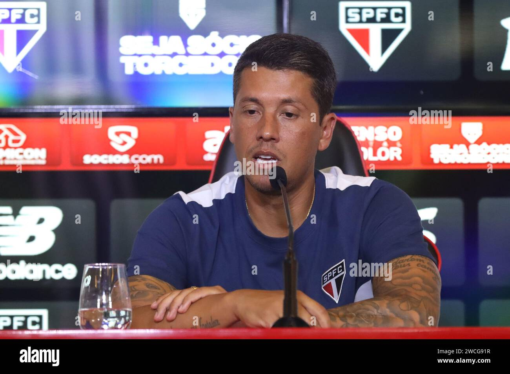

Breaking: São Paulo FC Clinches the Title!
São Paulo FC Wins the League After a Thrilling Final Match!
Relive the moments! Watch the highlights of the final match, including the decisive goal scored in the last minute.
Read exclusive interviews with the players and coach, reflecting on their journey to victory.
See fan reactions and celebrations from the stadium and across the city.
São Paulo FC has won the championship after a breathtaking match against their biggest rival.
Click in the image to read more!
São Paulo FC has won the championship after a breathtaking match against their biggest rival. The team displayed exceptional skill and determination throughout the match, leaving fans on the edge of their seats.
The fans are celebrating across the city. Images of the celebrations are flooding social media, use #SPFCChampion to see them all. The city mayor has declared a day of celebration.
The victory was celebrated with fireworks and cheers from the fans, who flooded the streets to show their support for the team. São Paulo FC's players and coaching staff expressed their gratitude to the loyal supporters who have stood by them throughout the season.
In a thrilling encounter, São Paulo FC secured the championship title with a stunning last-minute goal. The team displayed exceptional skill and determination throughout the match, leaving fans on the edge of their seats.
São Paulo FC Wins the League After a Thrilling Final Match! Relive the moments! Watch the highlights of the final match, including the decisive goal scored in the last minute. Read exclusive interviews with the players and coach, reflecting on their journey to victory. See fan reactions and celebrations from the stadium and across the city.
Click in the image to read more!
São Paulo FC has won the championship after a breathtaking match against their biggest rival. The team displayed exceptional skill and determination throughout the match, leaving fans on the edge of their seats.
The victory was celebrated with fireworks and cheers from the fans, who flooded the streets to show their support for the team. São Paulo FC's players and coaching staff expressed their gratitude to the loyal supporters who have stood by them throughout the season.
In a thrilling encounter, São Paulo FC secured the championship title with a stunning last-minute goal. The team displayed exceptional skill and determination throughout the match, leaving fans on the edge of their seats.
The victory was celebrated with fireworks and cheers from the fans, who flooded the streets to show their support for the team. São Paulo FC's players and coaching staff expressed their gratitude to the loyal supporters who have stood by them throughout the season.
SPFC Signs a New Forward to Strengthen the Squad. Get to know the new signing! Read about their background, stats, and what they bring to the team. Watch their first press conference and see their excitement to join SPFC. Analyse the potential impact of this signing on the team's attacking strategy.
Click in the image to read more!
São Paulo FC has officially announced the signing of a new forward, who is expected to bolster the team's attacking options for the upcoming season. The player, known for their speed and goal-scoring ability, expressed excitement about joining the club and contributing to its success.
The forward, whose name is Oscar Silva, arrives from a prominent European club, where they showcased exceptional talent and a knack for finding the back of the net. Silva's career highlights include winning the Golden Boot in their previous league and consistently delivering match-winning performances. Their technical prowess, combined with a strong physical presence, makes them a formidable addition to the SPFC lineup.
During the press conference, Silva spoke passionately about their admiration for São Paulo FC's rich history and the passionate fanbase. They emphasized their commitment to working hard and integrating seamlessly into the team's dynamic. Silva also expressed eagerness to learn from the experienced players and contribute to the club's pursuit of silverware. "I'm here to give my all for the Tricolor," Silva stated, "and I can't wait to play in front of the incredible SPFC supporters."
Tactically, the signing of Silva offers SPFC manager a wealth of options. Silva's ability to play as a lone striker or in a supporting role alongside another forward adds versatility to the team's attacking setup. Their pace and dribbling skills will provide a constant threat on the counter-attack, while their aerial ability will be valuable in set-piece situations. Analysts predict that Silva's arrival will create healthy competition within the squad, pushing existing players to elevate their performance. The forward's experience at the highest level is expected to bring a winning mentality to the team, which will be crucial in their quest for titles.
The signing of Oscar Silva has generated immense excitement among SPFC fans, who are eagerly anticipating their debut. Social media platforms have been flooded with messages of welcome and support for the new forward. The club's official merchandise store has also seen a surge in sales of Silva's jersey, indicating the high level of anticipation surrounding their arrival. The upcoming matches are expected to draw large crowds as fans flock to witness Silva's impact on the team firsthand.
Coach Discusses the Strategy for the Upcoming Season. Learn about the coach's plans for the next season, including training regimes and tactical approaches. Read about key players to watch and potential lineup changes. See the coaches thoughts on the youth players, and who may be promoted to the main squad.
Click in the image to read more!
São Paulo FC's coach held a press conference to discuss the team's strategy for the upcoming season. He emphasized the importance of teamwork and discipline, stating that every player has a crucial role to play.
The coach also highlighted the need for continuous improvement and adaptation to the evolving dynamics of football. He expressed confidence in the squad's potential and urged fans to rally behind the team as they embark on this new journey.
In response to questions about the new signings, the coach praised their skills and work ethic, indicating that they would fit seamlessly into the team's philosophy. He also mentioned the importance of integrating youth players into the first team, ensuring a bright future for São Paulo FC.